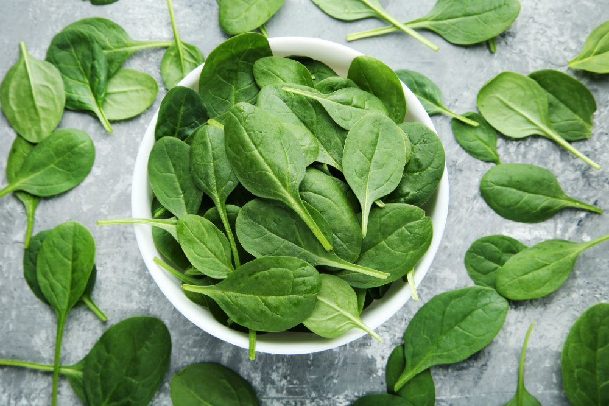
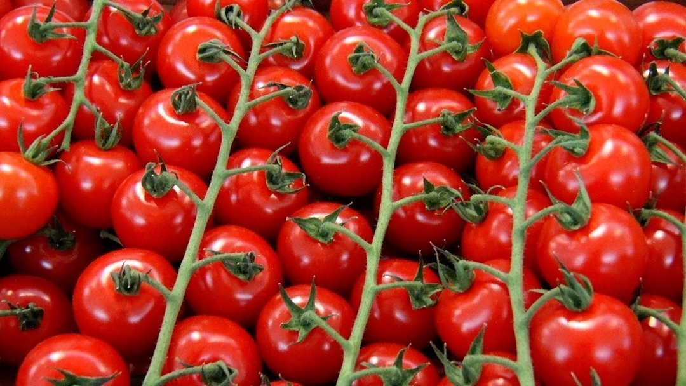
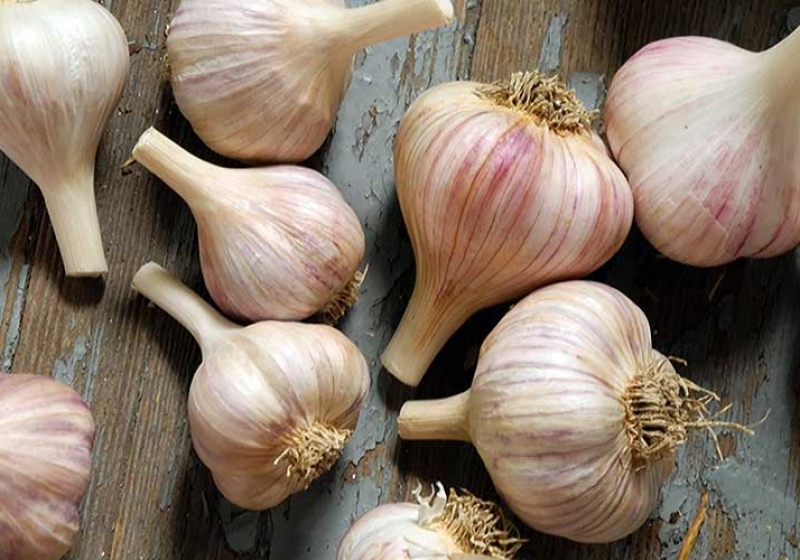
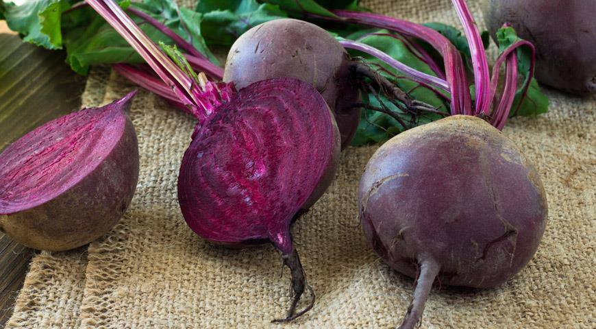
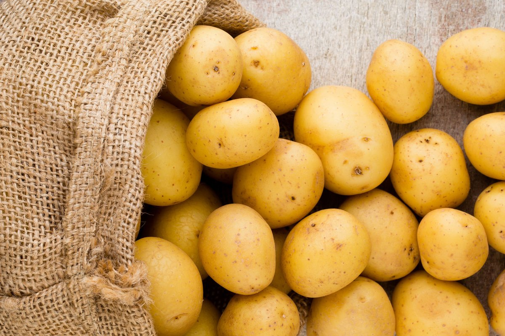

Морковь — это важный источник каротина, предшественника витамина А.
Хрустящая
морковка
также содержит в своем составе и другие полезные вещества: витамины В, РР, С, Е, К,
калий,
железо,
фосфор, магний, йод, фтор. Она улучшает состав крови, благотворно влияет на работу
сердечно-сосудистой
системы и кишечника, укрепляет ногти и волосы, питает кожу.
Морковь — это важный источник каротина, предшественника витамина А.
Хрустящая
морковка
также содержит в своем составе и другие полезные вещества: витамины В, РР, С, Е, К,
калий,
железо,
фосфор, магний, йод, фтор. Она улучшает состав крови, благотворно влияет на работу
сердечно-сосудистой
системы и кишечника, укрепляет ногти и волосы, питает кожу.

Несмотря на то что шпинат скорее можно назвать травой, он относится к
овощам
и
представляет собой очень полезный продукт. Шпинат по праву можно назвать суперфудом
современности.
Что
это значит? Это значит, что его состав очень приближен к составу эффективных
лекарственных
препаратов. В
нем есть витамины А, группы В, С, Р, РР, Е, D, K, а также важные микро- и
макроэлементы,
среди
которых
калий, железо, йод.

Помидоры являются довольно распространенным овощем на российском
столе.
И не
зря.
Это
очень полезный продукт, который выполняет ряд важных функций в организме человека.
Так,
помидоры
нормализуют обмен веществ, стимулируют работу почек и кишечника, снижают уровень
вредного
холестерина в крови. Полезны томаты и при заболеваниях сердечно-сосудистой системы и
малокровии.
 Трудно переоценить полезные свойства белокочанной капусты. Она
содержит в
своем
составе практически все важные витамины и минералы. Капуста также является
источником
витамина
U,
который организм человека не способен вырабатывать сам. Это вещество помогает
бороться с
раком и
способно предотвратить ряд заболеваний, включая нарушения работы кишечника, гастрит,
язву
желудка.
Трудно переоценить полезные свойства белокочанной капусты. Она
содержит в
своем
составе практически все важные витамины и минералы. Капуста также является
источником
витамина
U,
который организм человека не способен вырабатывать сам. Это вещество помогает
бороться с
раком и
способно предотвратить ряд заболеваний, включая нарушения работы кишечника, гастрит,
язву
желудка.

Чеснок и его полезные свойства активно используются в народной
медицине.
Это
мощный
природный антибиотик широкого спектра действия, в котором содержится более 150
полезных
веществ.
Чеснок оказывает на организм общеукрепляющее, противовоспалительное,
антисептическое,
противомикробное, противогрибковое действие. Он укрепляет иммунитет и значительно
повышает
защитные
силы человека.
 Немногие знают, но в болгарском перце содержится гораздо больше
витамина
С,
чем в
лимонах и черной смородине. Следует знать, что самая высокая концентрация
аскорбиновой
кислоты
располагается у плодоножки, ведь именно ее мы зачастую нещадно обрезаем. В
болгарском
перце
также
можно найти витамины группы В, Р, РР, калий, натрий, кальций, железо, фосфор.
Немногие знают, но в болгарском перце содержится гораздо больше
витамина
С,
чем в
лимонах и черной смородине. Следует знать, что самая высокая концентрация
аскорбиновой
кислоты
располагается у плодоножки, ведь именно ее мы зачастую нещадно обрезаем. В
болгарском
перце
также
можно найти витамины группы В, Р, РР, калий, натрий, кальций, железо, фосфор.

Свекла — это источник природного сахара и не только. Сладкий
корнеплод
богат
витаминами и микроэлементами, среди которых йод, магний, калий, кальций, железо,
фосфор.
Свекла
улучшает пищеварение и обмен веществ, выводит шлаки и токсины из организма,
благотворно
влияет
на
работу желудка, печени, сердечно-сосудистой системы.
 Ближайший родственник кабачка — баклажан — ничуть не уступает своему
собрату
по
полезности и питательности. Этот овощ относится к категории диетических и содержит
всего
24
калории
в 100 граммах. В восточных странах баклажан окрестили овощем долголетия. Он
положительно
воздействует на сердечно-сосудистую систему, расщепляет холестериновые бляшки в
сосудах.
Ближайший родственник кабачка — баклажан — ничуть не уступает своему
собрату
по
полезности и питательности. Этот овощ относится к категории диетических и содержит
всего
24
калории
в 100 граммах. В восточных странах баклажан окрестили овощем долголетия. Он
положительно
воздействует на сердечно-сосудистую систему, расщепляет холестериновые бляшки в
сосудах.

В картошке содержатся практически все жизненно важные для человека
аминокислоты. Этот продукт эффективно выводит лишнюю жидкость из организма, тем
самым нормализуя
работу почек. Полезна картошка и при проблемах с желудочно-кишечным трактом и
атеросклерозе.